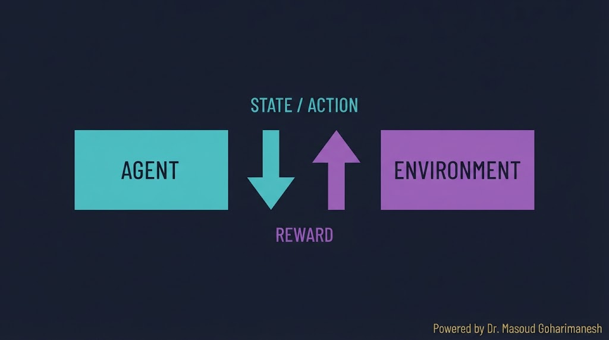
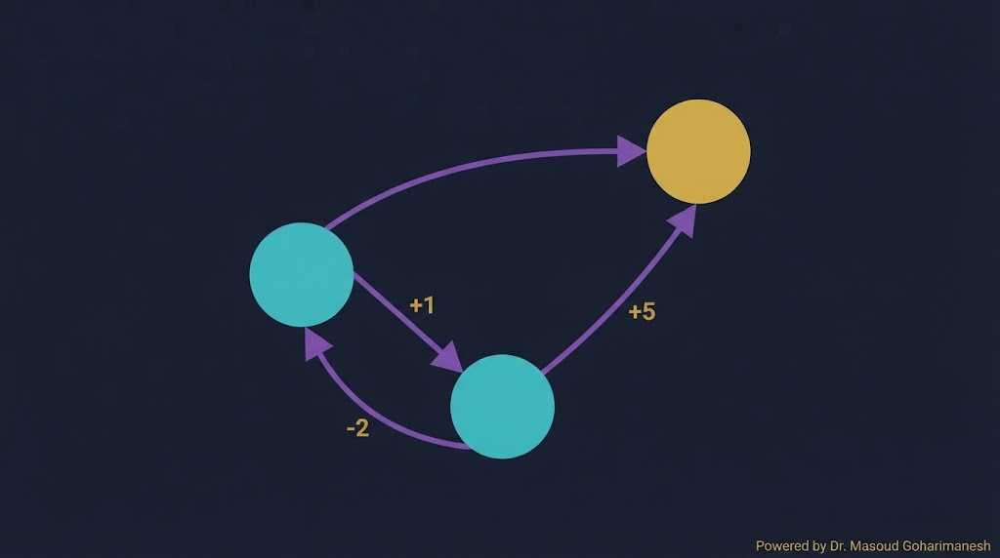
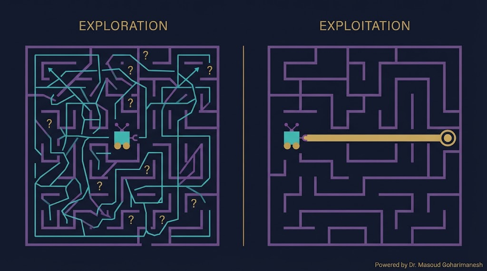
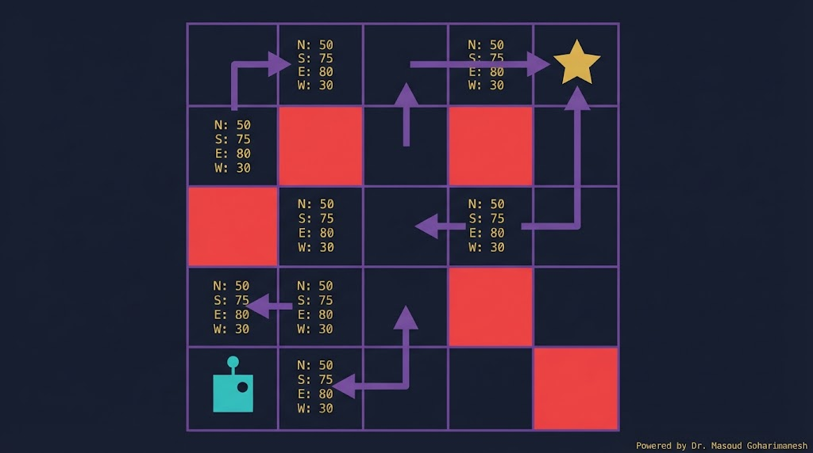
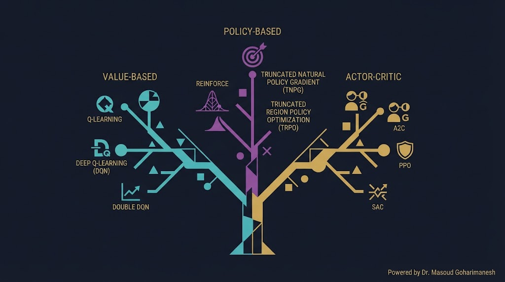
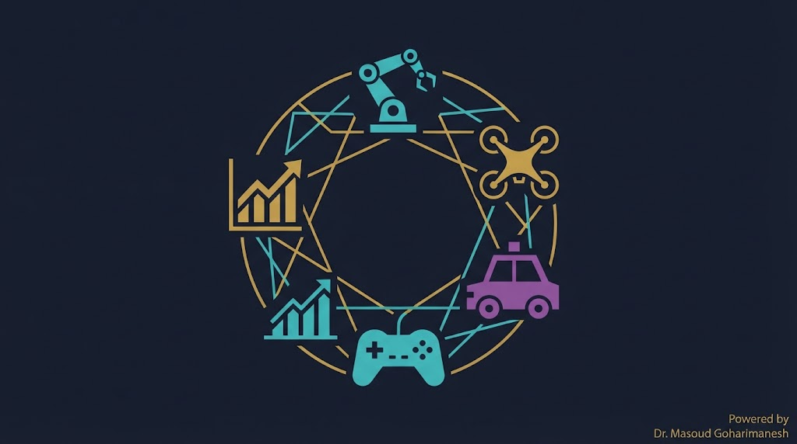
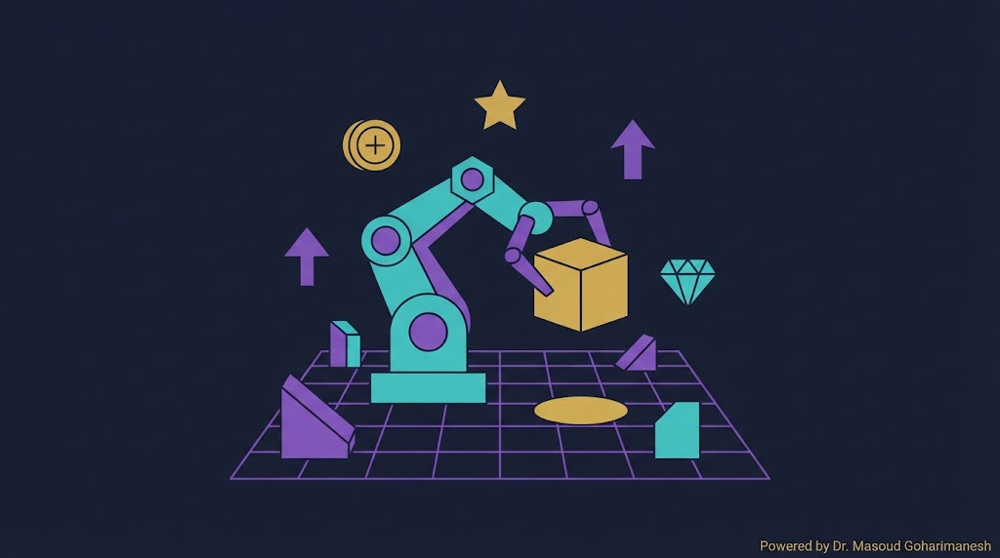

جلسه ۱۳ — RL مقدمه
جلسه ۱۳ — RL مقدمه
جلسه ۱۳ — RL مقدمه
جلسه ۱۳ — RL مقدمه
 ستاره این جلسه
به یاد شهدای والامقام
ستاره این جلسه
به یاد شهدای والامقامReinforcement Learning · Agent · Environment · Reward
From Trial and Error to Intelligent Decisions
Transfer Learning، Fine-Tuning
RL، MDP، Q-Learning
✅ RL چیست؟
✅ Agent، Environment، Reward
✅ Markov Decision Process (MDP)
✅ Exploration vs Exploitation
✅ Q-Learning مقدماتی
✅ Gymnasium
تا جلسه قبل، مدلهای ما «نظارتشده» بودند: به مدل داده (ورودی) و برچسب (خروجی درست) میدادیم. اما در بسیاری از مسائل واقعی، هیچ برچسب درستی وجود ندارد — فقط میدانیم هدف چیست و باید خودمان راه رسیدن به آن را کشف کنیم.
یادگیری تقویتی الهامگرفته از یادگیری انسان است: از اشتباهات، از پاداشها، از تجربه. این همان روشی است که DeepMind با آن Go را شکست داد، Tesla با آن خودران میسازد، و Boston Dynamics با آن رباتها را آموزش میدهد.
فقط پاداش و جریمه
عمل → نتیجه → بازخورد
بیشینهسازی پاداش
عرصه اصلی RL
| ویژگی | Supervised Learning | Reinforcement Learning |
|---|---|---|
| داده | (x, y) — زوج ورودی-برچسب | تجربه (s, a, r, s') |
| بازخورد | میگوید جواب درست چیست | فقط پاداش/جریمه |
| هدف | کمینهسازی خطا | بیشینهسازی پاداش تجمعی |
| محیط | ایستا | پویا — تحت تأثیر اعمال |
| توالی | مستقل | وابسته به زمان |
| مثال | تشخیص گربه از تصویر | بازی Go، کنترل ربات |
در هر مسئله RL دو جزء اصلی وجود دارد:
موجودی که یاد میگیرد و تصمیم میگیرد
مثال: ربات، بازیکن، خودرو
دنیایی که Agent در آن عمل میکند
مثال: صفحه شطرنج، جاده، کارخانه

یک Agent را در محیط ساده ببینید: عمل → پاداش → وضعیت جدید
MDP چارچوب ریاضی استاندارد برای مسائل RL است. یک MDP با ۵ عنصر تعریف میشود:

| نماد | نام | معنی |
|---|---|---|
| $S$ | States | مجموعه همه وضعیتهای ممکن |
| $A$ | Actions | مجموعه همه اعمال ممکن |
| $P$ | Transition | احتمال رفتن از $s$ به $s'$ با $a$ |
| $R$ | Reward | پاداش هر گذار |
| $\gamma$ | Discount | ضریب تخفیف (0 تا 1) |
وضعیت فعلی محیط — مثلاً موقعیت ربات
عملی که Agent انجام میدهد — مثلاً حرکت به راست
بازخورد محیط — مثلاً +۱۰ برای رسیدن به هدف
استراتژی Agent — کدام عمل در کدام وضعیت
پاداش مورد انتظار از یک وضعیت
پاداش مورد انتظار از یک (وضعیت، عمل)
معادله Bellman میگوید: «ارزش یک وضعیت = پاداش فعلی + ارزش تخفیفیافتهی بهترین وضعیت بعدی».
فقط پاداش فوری مهم است
همه پاداشهای آینده یکسان مهماند
تعادل — معمولاً بهترین
این معادله، پایه Q-Learning و Deep RL است. اگر آن را بفهمید، ۸۰٪ RL را فهمیدهاید.
یک Agent تصادفی در Grid World حرکت میکند. هدف: رسیدن به ستاره طلایی.
اساسیترین چالش در RL: آیا کاری را که میدانیم بهترین است انجام دهیم، یا چیزهای جدید امتحان کنیم؟

امتحان کردن اعمال جدید — ممکن است پاداش بهتری پیدا کنیم
ریسک: ممکن است به دام بیفتیم
استفاده از بهترین عمل شناختهشده — تضمین پاداش فعلی
ریسک: شاید راه بهتری وجود دارد
وضعیت فعلی $s_t$
انتخاب عمل $a_t$ با policy
محیط پاسخ میدهد: $r$، $s'$
بهروزرسانی Policy/Q-Value
تا رسیدن به بهینه
ε را تغییر دهید و ببینید Agent چطور بین Exploration و Exploitation تعادل برقرار میکند.
Q-Learning یکی از سادهترین و پایهایترین الگوریتمهای RL است. ایده: نگهداری یک جدول از Q-Value برای هر (وضعیت، عمل).

نرخ یادگیری — چقدر سریع Q را تغییر دهیم
تخفیف — پاداشهای آینده چقدر مهم
اکتشاف — چقدر تصادفی عمل کنیم
Q-Table یک جدول دوبعدی است: سطرها = وضعیتها، ستونها = اعمال.
| State ↓ / Action → | بالا | پایین | چپ | راست |
|---|---|---|---|---|
| (0,0) | 0.1 | 0.0 | -0.2 | 0.8 |
| (0,1) | 0.0 | 0.3 | 0.2 | 1.2 |
| (0,2) | -0.1 | 0.5 | 0.9 | 2.0 |
| (1,0) | 0.4 | 0.8 | 0.0 | 0.6 |
در هر وضعیت، عملی که بیشترین Q را دارد، بهترین است.

| خانواده | الگوریتمها | ایده اصلی |
|---|---|---|
| Value-Based | Q-Learning، DQN | یادگیری Q-Value |
| Policy-Based | REINFORCE، A2C | یادگیری مستقیم Policy |
| Actor-Critic | PPO، SAC، DDPG | ترکیب هر دو |

کنترل بازو، راهرفتن، گرفتن اشیاء
تصمیمگیری در ترافیک
بهینهسازی HVAC، راکتور
AlphaGo، Atari، Dota
Gymnasium (جانشین OpenAI Gym) مجموعهای از محیطهای آماده برای آزمایش الگوریتمهای RL است.

تعادل میله — شروع کلاسیک
ماشین در شیب
فرود روی ماه
راهرفتن دوپا
# نصب pip install gymnasium # استفاده import gymnasium as gym env = gym.make('CartPole-v1') state, info = env.reset() for _ in range(100): action = env.action_space.sample() # تصادفی state, reward, done, truncated, info = env.step(action) if done or truncated: break
import numpy as np import gymnasium as gym env = gym.make('FrozenLake-v1', is_slippery=False) n_states = env.observation_space.n n_actions = env.action_space.n # Q-Table اولیه (صفر) Q = np.zeros((n_states, n_actions)) # هایپرپارامترها alpha = 0.1 gamma = 0.99 epsilon = 0.1 episodes = 1000 for ep in range(episodes): state, _ = env.reset() done = False while not done: # ε-greedy if np.random.rand() < epsilon: action = env.action_space.sample() else: action = np.argmax(Q[state]) next_state, reward, done, _, _ = env.step(action) # بهروزرسانی Q Q[state, action] += alpha * ( reward + gamma * np.max(Q[next_state]) - Q[state, action] ) state = next_state print("Q-Table نهایی:") print(Q)
% Q-Learning ساده n_states = 16; n_actions = 4; Q = zeros(n_states, n_actions); alpha = 0.1; gamma = 0.99; epsilon = 0.1; episodes = 1000; for ep = 1:episodes state = 1; % شروع while state ~= n_states % ε-greedy if rand < epsilon action = randi(n_actions); else [~, action] = max(Q(state, :)); end % شبیهسازی انتقال (باید سفارشی شود) [next_state, reward] = step(state, action); % بهروزرسانی Q(state, action) = Q(state, action) + alpha * ... (reward + gamma * max(Q(next_state, :)) - Q(state, action)); state = next_state; end end
[AI] HW13 - نام - شماره دانشجویی به arcslab.uth@gmail.com
جستوجوی پروژههای RL
جلسه ۱۳ — اصلیتحلیل کد Gymnasium
پشتیبانکدنویسی RL
پیشنهادیدر Perplexity جستوجو کنید: «Reinforcement Learning control system 2024» و ۳ مقاله معتبر پیدا کنید.
Next Session: Q-Learning & DQN
• Q-Learning عمیق
• DQN — Deep Q-Network
• Experience Replay
• Target Network
• CartPole کامل